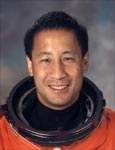

Lyndon B. Johnson Space Center
Houston, Texas 77058
|
National Aeronautics and Space Administration Lyndon B. Johnson Space Center Houston, Texas 77058 |
 |
Biographical Data |
||
Edward Tsang Lu (Ph.D.)
NASA Astronaut (former)
PERSONAL DATA: Born July 1, 1963, in Springfield, Massachusetts. Considers Honolulu, Hawaii, and Webster, New York, to be his hometowns. Married. One child. He enjoys aerobatic flying, coaching wrestling, piano, tennis, surfing, skiing, and travel. His parents, Charlie and Snowlily Lu, reside in Fremont, California.
EDUCATION: Graduated from R.L. Thomas High School, Webster, New York, in 1980. Bachelor of science degree in electrical engineering from Cornell University, 1984. Doctorate in applied physics from Stanford University, 1989.
ORGANIZATIONS: American Astronomical Society, Aircraft Owners and Pilots Association, Experimental Aircraft Association.
SPECIAL HONORS: Cornell University Presidential Scholar, Hughes Aircraft Company Masters Fellow, NASA Exceptional Service Medal, NASA Distinguished Service Medal, Gagarin Medal, Komorov Medal, Beregovoy Medal, 3 NASA Spaceflight medals.
EXPERIENCE: After obtaining his Ph.D., Dr. Lu was a research physicist working in the fields of solar physics and astrophysics. He was a visiting scientist at the High Altitude Observatory in Boulder, Colorado, from 1989 until 1992, the final year holding a joint appointment with the Joint Institute for Laboratory Astrophysics at the University of Colorado. From 1992 until 1995, he was a postdoctoral fellow at the Institute for Astronomy in Honolulu, Hawaii. Dr. Lu has developed a number of new theoretical advances, which have provided for the first time a basic understanding of the underlying physics of solar flares. He has published articles on a wide range of topics including solar flares, cosmology, solar oscillations, statistical mechanics, plasma physics, and near Earth asteroids. He holds a commercial pilot certificate with instrument and multi-engine ratings, and has over 1500 hours of flying time.
NASA EXPERIENCE: Selected by NASA in December 1994, Dr. Lu reported to the Johnson Space Center in March 1995, has completed a year of training and evaluation, and is qualified for assignment as a mission specialist. Among technical assignments held since then Dr. Lu has worked in the astronaut office computer support branch, and has served as lead astronaut for Space Station training, lead astronaut for Shuttle training, and is currently in the Exploration Branch. Dr. Lu flew as a mission specialist on STS-84 in 1997, was a mission specialist and payload commander on STS-106 in 2000, flight engineer on Soyuz TMA-2 and served as NASA ISS Science Officer and flight engineer on ISS Expedition-7 in 2003. A veteran of three space missions, Dr. Lu has logged over 206 days in space, and an EVA (spacewalk) totaling 6 hours and 14 minutes. In August 2007, Dr. Lu retired from NASA in order to pursue private interests.
SPACE FLIGHT EXPERIENCE: STS-84 Atlantis (May 15-24, 1997), was NASA’s sixth Shuttle mission to rendezvous and dock with the Russian Space Station Mir. In completing this mission, Dr. Lu traveled 3.6 million miles in 144 orbits of the Earth logging a total of 9 days, 5 hours, 19 minutes, and 55 seconds in space.
STS -106 Atlantis (September 8-20, 2000). During the 12-day mission, the crew successfully prepared the International Space Station for the arrival of the first permanent crew. The five astronauts and two cosmonauts delivered more than 6,600 pounds of supplies and installed batteries, power converters, life support, and exercise equipment on the Space Station. Ed Lu and Yuri Malenchenko performed a 6 hour and 14 minute space walk in order to connect power, data and communications cables to the newly arrived Zvezda Service Module and the Space Station. STS-106 orbited the Earth 185 times, and covered 4.9 million miles in 11 days, 19 hours, and 10 minutes.
ISS Expedition-7 (April 25 to October 27, 2003). Dr. Lu was the first American to launch as the Flight Engineer of a Soyuz spacecraft, and the first American to launch and land on a Soyuz spacecraft (Soyuz TMA-2). As Flight Engineer and NASA ISS Science Officer Dr. Lu spent a successful 6-month tour of duty aboard the International Space Station maintaining ISS systems and overseeing science operations. In completing this mission, Dr. Lu logged 184 days, 21 hours and 47 minutes in space.
AUGUST 2007